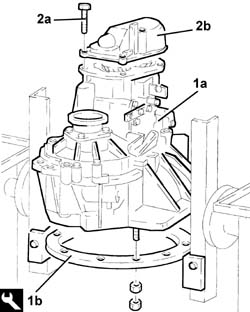
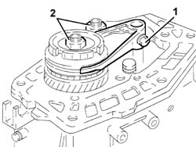
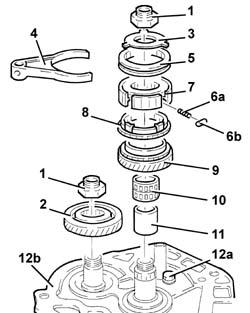
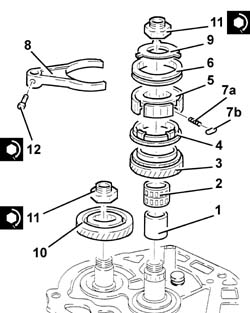
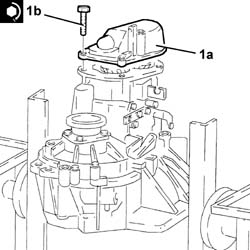

2110C34 spacer and rear cover - r + r with gearbox removed
- Path
- Procedures > 21 GEARBOX > 2110 MANUAL GEARBOX AND DIFFERENTIAL > 2110C gear cases and covers of manual gearbox with differential > 2110C34 spacer and rear cover - r + r with gearbox removed
- Kind
- repair procedure (removal / refitting; the operation number is the code)
- Applies to
- engines: 1.6 TS , 1.8 TS, 2.0 JTS, 2.0 JTS; production: da 04/98 a 02/99
- Interactive page
- https://sloeber94.github.io/elrnDB-a156/en/#/3239109
Applies to: engines: 1.6 TS , 1.8 TS, 2.0 JTS, 2.0 JTS; production: da 04/98 a 02/99
 Removing
Removing
 Refitting
Refitting1. Fit the gearbox and differential (1a) on the overhaul stand using the tool (1b).
 | Name | Country |
|---|---|---|
1b | Mount | 1.820.146.000 |
2. Undo the bolts (2a) and remove the rear cover (2b).

Applies to: engines: 1.6 TS , 1.8 TS, 2.0 JTS, 2.0 JTS; production: da 04/98 a 02/99
Engage 5 th speed pressing the selector fork on the main shaft.
Engage any gear using the gear selector/engagement lever.
1. Undo the 5 th speed selector fork bolt.
2. Remove the staking and loosen the ring nuts for the main and layshafts.
Position the selector fork for 5 th speed in neutral.

Applies to: engines: 1.6 TS , 1.8 TS, 2.0 JTS, 2.0 JTS; production: da 04/98 a 02/99
1. Completely undo the ring nuts for the main and layshafts.
2. Remove the 5 th speed driven gear.
3. Remove the 5 th speed synchronizer roller and spring retaining flange.
4. Remove the 5 th speed selector fork.
5. Remove the 5 th speed sliding sleeve.
6. Remove the springs (6a) and rollers (6b) for the 5 th speed hub.
7. Remove the 5 th speed sliding sleeve hub.
8. Remove the 5 th speed synchronizer ring.
9. Remove the 5 th speed drive gear.
10. Remove the needle bearing for the 5 th speed drive gear.
11. Remove the 5 th speed drive gear bush.
12. Undo the bolt (12a) and remove the plate (12b) retaining the main and layshaft rear bearings.

Applies to: engines: 1.6 TS , 1.8 TS, 2.0 JTS, 2.0 JTS; production: da 04/98 a 02/99
Refitting
RemovingApply Loctite 573 sealant to the contact surfaces between the gearbox casing and the main and layshaft rear bearing retaining plate.
Fit the main and layshaft rear bearing retaining plate and secure by tightening the bolt to torque.
 | Fastening | Component | Ø | Value (daNm) |
|---|---|---|---|---|
- | Bolt | GEARBOX REAR COVER SPACER | M8 | (Gearbox casing side) 2.1 ÷ 2.6 |
1. Fit the 5 th speed drive gear bush.
2. Fit the needle bearing for the 5 th speed drive gear.
3. Fit the 5 th speed drive gear.
4. Fit the 5 th speed synchronizer gear.
5. Fit the 5 th speed sliding sleeve hub.
6. Fit the 5 th speed sliding sleeve.
7. Fit the springs (7a) and rollers (7b) for the 5 th speed sliding sleeve hub.
8. Fit the 5 th speed selector fork.
9. Fit the 5 th speed synchronizer spring and roller retaining flange.
10. Fit the 5 th speed driven gear.
11. Tighten the new main shaft and layshaft ring nuts to the specified torque.
| Fastening | Component | Ø | Value (daNm) |
|---|---|---|---|---|
11 | Ring nut | GEAR SHAFTS | M20 | 10.0 ÷ 12.4 |
12. Tighten the 5 th speed selector fork bolt to the specified torque.
| Fastening | Component | Ø | Value (daNm) |
|---|---|---|---|---|
12 | Bolt | 5TH SPEED SELECTOR FORK | M6 | 1.5 ÷ 1.9 |

Applies to: engines: 1.6 TS , 1.8 TS, 2.0 JTS, 2.0 JTS; production: da 04/98 a 02/99
Apply Loctite 573 sealant to the contact surfaces between the main and layshaft rear bearing retaining plate and the rear cover.
1. Fit the rear cover (1a) and secure by tightening the bolts (1b) to torque.
| Fastening | Component | Ø | Value (daNm) |
|---|---|---|---|---|
1b | Bolt | GEARBOX REAR COVER | M8 | 2.1 ÷ 2.6 |

Applies to: engines: 1.6 TS , 1.8 TS, 2.0 JTS, 2.0 JTS; production: da 04/98 a 02/99
Undo the fixings and remove the gearbox and differential from the tool.
| Name | Country |
|---|---|---|
- | Mount | 1.820.146.000 |
Remove the tool supporting the overhaul stand and put it back.